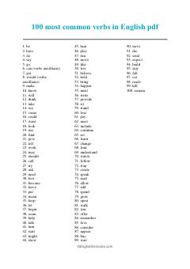

1TIngliz tilida eng koʻp ishlatiladigan 100 ta feʻlning qulay roʻyxati.
Ushbu qoʻllanma ingliz tilida eng koʻp qoʻllaniladigan 100 ta asosiy feʻlning roʻyxatini oʻz ichiga oladi. Har bir feʻl tartib bilan joylashtirilgan boʻlib, til oʻrganuvchilar uchun soʻz boyligini oshirishda qulay manba boʻlib xizmat qiladi. Material ingliz tilini endi boshlayotganlar uchun juda foydali.